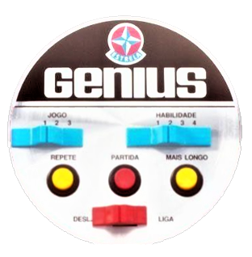

Genius
Como Jogar: o Genius faz uma sequência e você deve repeti-la. Ele começa piscando uma luz. Você deve clicar sobre a luz que piscou. Na seqüência ele piscará esta mesma luz, e depois piscará mais uma. Você clicar nas duas luzes que piscaram na mesma sequência que o programa. Isso se repetirá até o o jogador errar.
